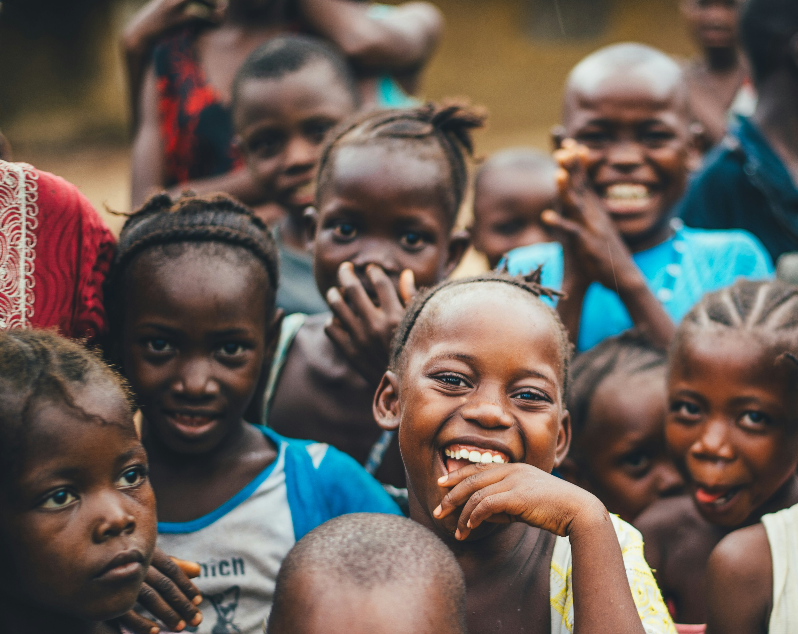
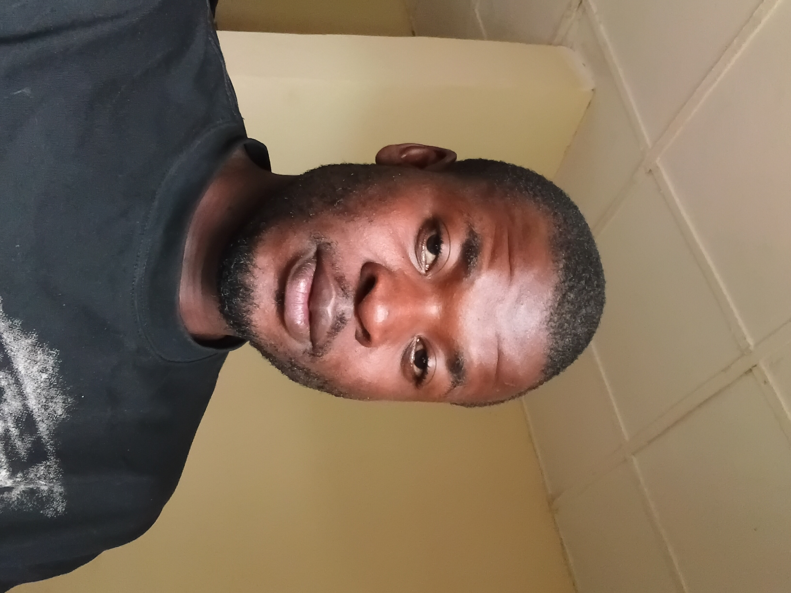

Education
Promoting access to learning and exploring ways to support children and learners facing educational barriers.
Hope Hour Foundation is a compassion-led initiative built on a simple belief: every person deserves dignity, care, and hope. We seek to spread love, support people facing hardship, and remind broken hearts that they are not forgotten.

Hope Hour Foundation was inspired by the everyday struggles people face and the difference a small act of kindness can make. Our vision is to spread love, offer encouragement to the broken-hearted, give hope to the living, and become a shoulder humanity can lean on.
We believe compassion should move beyond words. By building awareness, encouraging practical care, and bringing people together, we hope to help create communities where no one is treated as invisible.
Our Mission: To inspire compassion, promote human dignity, and mobilise people to support those facing hardship through awareness, community partnerships, and practical acts of kindness.
Hope Hour Foundation is currently building awareness and developing its initiatives. Please contact us to discuss collaboration or support. Do not interpret this website as a claim of formal registration or tax-exempt status.
Our intended areas of focus include the following, subject to available resources, partnerships, and programme development.
Promoting access to learning and exploring ways to support children and learners facing educational barriers.
Encouraging compassionate support for patients and families facing medical hardship, through awareness and potential partnerships.
Raising awareness about hunger and food waste while exploring practical, community-led ways to support people experiencing food insecurity.
Inspiring kindness, offering encouragement, and building awareness of the everyday struggles people face so communities can support one another.
We believe every act of genuine kindness matters. You do not need to solve every problem alone to make a difference; you can begin by seeing someone, listening, sharing what you can, and treating every life with dignity.
Compassion becomes powerful when we put it into action. Whether you volunteer your skills, share our message, connect us with potential partners, or explore ways to support future programmes, you can help Hope Hour Foundation bring its vision of dignity, kindness, and hope to more people.
Please contact the Foundation before sending money or personal information. Programme details and support arrangements should be confirmed directly.

My name is Joel Agada, a Tourism Management Technology alumnus of the Isa Mustapha Agwai I Polytechnic, Lafia, Nasarawa State, Nigeria. My academic and professional foundations in tourism management and community resource planning gave me a deep understanding of sustainable development, geographical resource allocation, and local economic structures.
It was during this formative journey that I recognized a critical developmental gap: the urgent need for structured, scalable interventions designed to rescue vulnerable populations and build resilient community frameworks. This realization served as the catalyst for establishing the **Hope Hour Foundation**.
"Sustainable community transformation requires moving away from short-term charity toward structural empowerment."
At the core of our operations is a strategic focus on key pillars of human development, including youth capacity building, grassroots livelihood support, and targeted emergency aid. By combining rigorous, transparent operational frameworks with local execution models, we ensure that every initiative generates measurable, high-impact societal returns.
Our commitment to humanitarian service is anchored in an unyielding conviction: every individual possesses an inherent right to absolute dignity, economic equity, and structural stability. The Hope Hour Foundation bridges the gap between global developmental resources and high-impact local deployment. We invite global partners, institutional donors, and corporate stakeholders to collaborate with us as we scale operations and institutionalize sustainable development models.
For enquiries, volunteering, or potential partnerships, reach out through our official channels.
Email: hopehourfoundation555@gmail.com
WhatsApp: Chat with Hope Hour Foundation
Facebook: Visit our Facebook page
Instagram: Follow us on Instagram